This chapter provides a more advanced and rigorous treatment of physical optics, diving deeper into interference, diffraction, and polarization.
Electric and magnetic fields of a plane wave:
$$ \vec{E}(p, t) = \vec{E}_0(p) \cos[\omega t - \varphi(p)] $$
$$ \vec{H}(p, t) = \vec{H}_0(p) \cos[\omega t - \varphi(p)] $$
In an isotropic medium satisfying the paraxial condition, it can be represented as:
$$ U(p, t) = A(p) \cos[\omega t - \varphi(p)] \Leftrightarrow \tilde{U}(p, t) = A(p) e^{i[\omega t - \varphi(p)]} = \tilde{U}(p) e^{-i\omega t} $$
Intensity of light:
$$ I(p) = [A(p)]^2 \equiv \tilde{U}^*(p) \tilde{U}(p) $$
Waves have the law of independent propagation. In a linear medium, they satisfy the wave superposition principle:
$$ \tilde{U}(p) = \tilde{U}_1(p) + \tilde{U}_2(p) \quad \text{Complex amplitude at point } p $$
Intensity:
$$ I(p) = \tilde{U}^*(p) \tilde{U}(p) = [\tilde{U}_1^*(p) + \tilde{U}_2^*(p)][\tilde{U}_1(p) + \tilde{U}_2(p)] $$
$$ = [A_1(p)]^2 + [A_2(p)]^2 + A_1(p)A_2(p) (e^{-i\varphi_1(p) + i\varphi_2(p)} + e^{i\varphi_1(p) - i\varphi_2(p)}) $$
That is:
$$ I(p) = I_1(p) + I_2(p) + 2\sqrt{I_1(p) I_2(p)} \cos \delta(p) $$
where $ \delta(p) = \varphi_1(p) - \varphi_2(p) $.
Let $ A_1(p) = A_2(p) = A $, $ I_1(p) = I_2(p) = A^2 $, the above formula simplifies to:
$$ I(p) = 2A^2 [1 + \cos \delta(p)] = 4A^2 \cos^2 \frac{\delta(p)}{2} $$
Thus, the intensity distribution is a periodic function of the phase difference $ \delta(p) $.
Contrast/Visibility:
$$ \gamma = \frac{I_{\text{max}} - I_{\text{min}}}{I_{\text{max}} + I_{\text{min}}} \in [0, 1] $$
The emission process of ordinary light sources (non-lasers) is dominated by spontaneous emission. The wave trains emitted by each atom or molecule sequentially, and the wave trains emitted by different atoms or molecules, have no relationship in vibration direction and phase.
The phase difference $ \delta = \varphi_1 - \varphi_2 $ is not fixed. $ \overline{\cos \delta} = 0 $.
Non-coherent superposition: $ I(p) = I_1(p) + I_2(p) $.
Fundamentally originates from the independence of emission from different parts of an extended light source. Manifests in the transverse direction of the wave field.
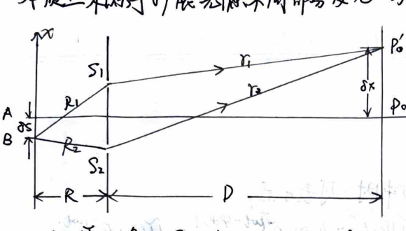
Diagram of spatial coherence from an extended source.
$P'_0$ is where the zeroth-order fringe is located. $ R_2 - R_1 = -\frac{d\cdot \partial S}{R} = r_1 - r_2 = \frac{d\cdot \delta x}{D} $.
$$ \therefore \delta x = -\frac{D}{R} \partial S $$
When the dark fringe generated by source point $A$ coincides with the zeroth-order bright fringe generated by source point $S$ at point $P'_0$, the resultant intensity is uniform, contrast $ \gamma = 0 $. At this time $ \delta x = \Delta x $, let $ \partial S = b_0 $.
In Young's experiment, we have $ b_0 = \frac{R}{D} \Delta x = \frac{R}{D} \cdot \frac{D\lambda}{d} = \frac{R\lambda}{d} $.
Conversely, if $ d \simeq \frac{R\lambda}{b_0} $, it is the transverse linear extent within which the light field has spatial coherence.
Aperture angle $ \Delta\theta_0 = d/R $, then $ b_0 \cdot \Delta\theta_0 \simeq \lambda $.
Application: Michelson stellar interferometer.
Fundamentally originates from the discontinuity in time of the emission process of the light source. Manifests in the longitudinal direction of the wave field.
Compare the optical path difference $ \Delta L = (SP_1) - (SP_2) $ with the wave train length $ L_0 = c\tau_0 $:
$$ L_0 = n \lambda_0 \simeq n \nu \tau_0 = c \tau_0 \text{ : Coherence length} $$
$$ \tau_0 = L_0/c \text{ : Coherence time} $$
Stationary light wave $ \tilde{u} = \tilde{A} e^{ikx} $. If it is a spectral line with a line width $ \Delta k $, the complex amplitude is $ \tilde{u} = \int \tilde{A}(k) e^{ikx} dk $. Here $ \tilde{A}(k) $ is the line shape of the spectral line. Assuming that between $ k_0 \pm \Delta k/2 $, $ \tilde{A}(k) = \pi \tilde{A} / \Delta k $, and $0$ outside this range, then
$$ \tilde{u} = \frac{\tilde{A}}{\Delta k} \int_{k_0 - \Delta k/2}^{k_0 + \Delta k/2} e^{ikx} dk = \tilde{A} \frac{\sin(\Delta k x / 2)}{\Delta k x / 2} e^{ik_0 x} $$
At $ x = 2\pi/\Delta k = \lambda^2 / \Delta\lambda $, the amplitude is 0. This is the endpoint of the wave train.
Thus, the order of magnitude of the wave train length is $ L_0 \approx \lambda^2 / \Delta\lambda $.
$$ \therefore \tau_0 \Delta\nu \approx 1 $$
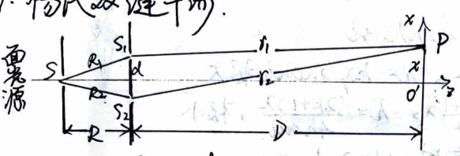
Geometry of Young's double slit interference.
$$ \varphi_{10} = \varphi_0 + \frac{2\pi}{\lambda} R_1 \quad , \quad \varphi_{20} = \varphi_0 + \frac{2\pi}{\lambda} R_2 $$
$$ \therefore \varphi_{10} - \varphi_{20} = \frac{2\pi}{\lambda} (R_1 - R_2) = 0 $$
$$ \therefore \text{Secondary sources } S_1, S_2 \text{ have the same initial phase.} $$
$$ r_1 - r_2 \simeq d \theta \simeq \frac{dx}{D} $$
Under the conditions $d \ll D$ (far-field condition) and $x \ll D$ (paraxial condition), the equal intensity surfaces on the screen can be approximated as straight lines from hyperbolas.
Phase difference $ \delta(p) = \frac{2\pi}{\lambda}(r_1 - r_2) = \frac{2\pi d}{\lambda D} x $.
Fringe spacing $ \Delta x = \frac{D\lambda}{d} $.
1) Consider moving a fixed field point $P$ across $N$ interference fringes. Whenever the optical path difference $ \Delta L(P) $ between the two interfering beams increases or decreases by one $\lambda$, one interference fringe shifts past point $P$. Therefore, the relationship between $N$ and the change in optical path difference $ \delta(\Delta L) $ is:
$$ \delta(\Delta L) = N \lambda $$
2) Consider the effect of the source width on the contrast of the interference fringes.
Intensity at $x$ on the screen: $ I(x) \propto 1 + \cos \delta(x) = 1 + \cos(\frac{2\pi d}{\lambda D} x) = 1 + \cos(\frac{2\pi x}{\Delta x}) $.
If the source movement $\partial S$ causes a fringe shift $\delta x$, the intensity distribution is:
$$ I(x) \propto 1 + \cos \delta(x) = 1 + \cos\left[ \frac{2\pi d}{\lambda D} (x - \delta x) \right] = 1 + \cos\left[ \frac{2\pi d}{\lambda D} (x + \frac{D}{R}\partial S) \right] $$
$$ = 1 + \cos(\frac{2\pi x}{\Delta x}) \cos(\frac{2\pi d}{\lambda R} \partial S) - \sin(\frac{2\pi d}{\lambda D} x) \sin(\frac{2\pi d}{\lambda R} \partial S) $$
$$ = 1 + \cos(\frac{2\pi x}{\Delta x}) \cos(\frac{2\pi}{\Delta x} \frac{D}{R} \partial S) - \sin(\frac{2\pi x}{\Delta x}) \sin(\frac{2\pi}{\Delta x} \frac{D}{R} \partial S) $$
Integrating the contributions of the light source of width $b$ at point $x$:
$$ I(x) = \frac{I_0}{b} \int_{-b/2}^{b/2} \left[ 1 + \cos(\frac{2\pi x}{\Delta x}) \cos(\frac{2\pi d}{\lambda R} \partial S) - \sin(\frac{2\pi x}{\Delta x}) \sin(\frac{2\pi d}{\lambda R} \partial S) \right] d(\partial S) $$
$$ = I_0 \left[ 1 + \frac{\sin(\pi d b / \lambda R)}{\pi d b / \lambda R} \cos \frac{2\pi x}{\Delta x} \right] $$
$$ \therefore \gamma = \frac{I_{\text{max}} - I_{\text{min}}}{I_{\text{max}} + I_{\text{min}}} = \left| \frac{\sin(\pi d b / \lambda R)}{\pi d b / \lambda R} \right| $$
$$ \Delta x = \frac{\lambda(B+C)}{2\alpha B} $$
$$ \Delta x = \frac{\lambda(B+C)}{2(n-1)\alpha B} $$
$$ \Delta x = \frac{\lambda D}{2a} $$
$$ \Delta L(P) \simeq 2nh\cos i $$
$$ \begin{cases} \Delta L = k\lambda, & h = k\lambda / 2n\cos i, \text{ maxima} \\ \Delta L = \frac{2k+1}{2}\lambda, & h = \frac{(2k+1)\lambda}{4n\cos i}, \text{ minima} \end{cases} $$
When the incident light is nearly perpendicular to the thin film surface, $\Delta L \simeq 2nh$.
$$ \Delta h = \frac{\lambda}{2n} $$
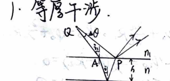
Interference at a wedge.
On a wedge, $ \Delta x \cdot \alpha = \Delta h \implies \Delta x = \frac{\lambda}{2n\alpha} $. The wedge angle is $ \alpha = \frac{\lambda}{2n\Delta x} $.
When there is a slight change in angle, i.e. $\alpha$ changes, $\Delta x$ will change accordingly, and the fringes become sparser or denser.
When the upper and lower surfaces undergo relative translation, since $\alpha$ does not change, $\Delta x$ does not change; $h$ changes, so $h = \frac{k\lambda}{2} \cos i$ (maxima) changes.
When there are "ridges" or "valleys" at the bottom, the fringes will also exhibit convexity or concavity:
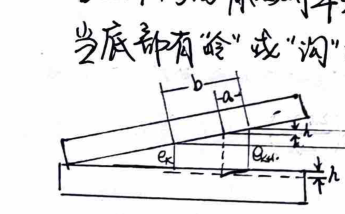
Fringe displacement due to surface irregularities.
$b$: fringe spacing; $a$: depth of fringe curvature.
$e_k$, $e_{k+H}$: normal air film thickness corresponding to $k$-th order and $k+H$-th order fringes.
$h$: depth of the texture/scratch.
$$ \frac{\Delta e}{b} = \frac{a}{b} $$
For an air film, $\Delta e = \frac{\lambda}{2}$, therefore $h = \frac{a}{b} \frac{\lambda}{2}$.
Newton's Rings:
$$ r_k^2 = R^2 - (R - h_k)^2 = 2Rh_k - h_k^2 \approx 2Rh_k = 2R \cdot \frac{k\lambda}{2} = kR\lambda $$
$$ \therefore r_k = \sqrt{kR\lambda} \quad \text{: fringe radius} $$
$$ \therefore R = \frac{r_{k+m}^2 - r_k^2}{m\lambda} $$
When a standard component (glass test plate) is placed over the workpiece to be measured, an air film is formed between the two, resulting in Newton's rings. The more rings there are, the larger the tolerance. $\Delta h = \frac{\lambda}{2}$.
Anti-reflection Coating:
$ 2nh + \frac{\lambda}{2} = k\lambda \implies h = (k - \frac{1}{2})\lambda / 2n $. When $k=1$, $h = \frac{\lambda}{4n}$.
When $ n_{\text{air}} < n_{\text{film}} < n_{\text{glass}} $, the two reflected beams both have half-wave loss, so their phase difference is $\pi$, and they interfere destructively.
Moreover, when satisfying $ n_{\text{film}} = \sqrt{n_{\text{air}} n_{\text{glass}}} $, perfect zero reflection is achieved.
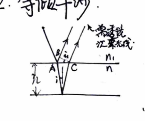
Equal inclination interference from a plane-parallel plate.
Optical path difference $ \Delta L = 2nh \cos i $.
$$ \Delta L = k\lambda, \quad \cos i_k = \frac{k\lambda}{2nh} $$
$$ \Delta L = (k+1)\lambda, \quad \cos i_{k+1} = \frac{(k+1)\lambda}{2nh} $$
$$ \therefore \cos i_{k+1} - \cos i_k = \frac{\lambda}{2nh} \approx \left( \frac{d\cos i}{di} \right)_{i_k} (i_{k+1} - i_k) = -\sin i_k (i_{k+1} - i_k) $$
$$ \therefore \Delta r = r_{k+1} - r_k \propto i_{k+1} - i_k = \frac{-\lambda}{2nh \sin i_k} $$
Therefore $ r_{k+1} < r_k $. The larger $k$ is, the smaller $h$ is, meaning that the fringes are denser further away from the center: as $k$ decreases, $|\Delta r|$ decreases.
Thicker films produce denser equal inclination fringes.
Optical path difference at the center point is $\Delta L = 2nh$. Each time $h$ changes by $\lambda/2n$, the center state changes (bright to dark or dark to bright).
As $h$ increases, the order $k$ at the center increases, and fringes "emanate" (spread out).
As $h$ decreases, the order $k$ at the center decreases, and fringes gather towards the center.
If the point source is replaced by an extended source, the images generated by all point sources on it with the same inclination angle and optical path difference will produce the same interference pattern. The contrast is unaffected and the pattern is brighter.
Michelson Interferometer:
$M_1 // M'_2$: Equal inclination fringes. The closer $M_1$ and $M'_2$ are, the sparser the fringes.
When $M_1$ and $M'_2$ form a small angle: Equal thickness fringes. For every distance $M_1$ moves, a fringe shifts past in the field of view. Let there be $N$ fringes, due to the non-monochromatic nature of the light source, as the optical path difference $\Delta L$ increases, the contrast of the interference fringes drops. The interference measurement length range is $ L_{\text{max}} = \frac{1}{2} \Delta L_{\text{max}} = \frac{\lambda^2}{2\Delta\lambda} $.
Secondary wave coherent superposition: $ \tilde{U}(P) = \frac{-i}{2\lambda} \iint (\cos\theta_0 + \cos\theta) \tilde{U}_0(Q) \frac{e^{ikr}}{r} d\Sigma $
When the aperture and the receiving screen satisfy the paraxial condition: $\theta_0 \approx \theta \approx 0, r \approx r_0$, then
$$ \tilde{U}(P) = \frac{-i}{\lambda r_0} \iint \tilde{U}_0(Q) e^{ikr} d\Sigma $$
Babinet's principle: For complementary screens: $ \Sigma_0 = \Sigma_a + \Sigma_b \implies \iint_{\Sigma_a} d\Sigma + \iint_{\Sigma_b} d\Sigma = \iint_{\Sigma_0} d\Sigma $
$$ \therefore \tilde{U}_a(P) + \tilde{U}_b(P) = \tilde{U}_0(P) \xrightarrow{\text{no light source}} 0 $$
$$ \therefore \tilde{U}_a(P) = -\tilde{U}_b(P) $$
$$ I_a = \tilde{U}_a \tilde{U}_a^* = \tilde{U}_b \tilde{U}_b^* = I_b(P) $$
That is, the diffraction patterns generated by complementary screens at the information plane are identical.
Fresnel (near source/near screen) $\to$ Fraunhofer (far source & far screen).
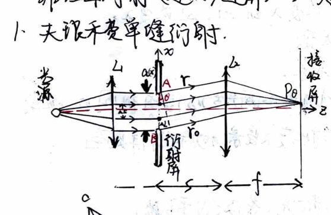
Fraunhofer single slit diffraction setup.
$$ \Delta L = a \sin\theta $$
From $A$, make a series of equal small vectors connected head-to-tail. Each turns a small angle of the same phase. Finally reaching point $B$.
The total turn angle is $ \alpha = \frac{2\pi}{\lambda} \Delta L = \frac{2\pi a}{\lambda} \sin\theta $.
Each small vector represents the contribution of a narrow strip $\Delta S$ to the amplitude at $P_\theta$.
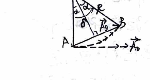
Phasor addition diagram for single slit diffraction.
$$ A_\theta = \overline{AB} = 2R\sin\alpha, \quad R = \frac{\widehat{AB}}{2\alpha} $$
$$ \therefore A_\theta = \overline{AB} = \widehat{AB} \frac{\sin\alpha}{\alpha} $$
Unroll $\widehat{AB}$ into a straight line, representing the amplitude $A_0$ when $\theta=0$.
$$ \therefore A_\theta = A_0 \frac{\sin\alpha}{\alpha}, \quad \alpha = \frac{\Delta}{2} = \frac{\pi a}{\lambda} \sin\theta $$
$$ \therefore I_\theta = I_0 \left( \frac{\sin\alpha}{\alpha} \right)^2 \quad \text{is the intensity at } \theta $$
Or derived from the Fresnel-Kirchhoff integral formula:
$$ \tilde{u}(\theta) = C \iint \tilde{u}_0 e^{ikr} dx dy, \quad \text{optical path difference } \Delta r = r_x $$
$$ = -x\sin\theta $$
Under normal incidence, $\tilde{u}_0$ is independent of $y$, taking out the constants and integrating over $y$ to get constant $C$:
$$ \tilde{u}(\theta) = C \int_{-a/2}^{a/2} e^{ikrx} dx = C \int_{-a/2}^{a/2} e^{-ikx\sin\theta} dx = C \frac{e^{-ikx\sin\theta}}{-ik\sin\theta} \Big|_{-a/2}^{a/2} $$
$$ = 2C \frac{\sin(ka\sin\theta)}{k\sin\theta} = \tilde{u}(0) \frac{\sin\alpha}{\alpha}, \quad \alpha = \frac{ka\sin\theta}{2} = \frac{\pi a\sin\theta}{\lambda} $$
$$ \therefore I_\theta = I_0 \left( \frac{\sin\alpha}{\alpha} \right)^2, \quad \text{where } I_0 = \tilde{u}^*(0) \tilde{u}(0) \text{ is the intensity at the center of the diffraction field} $$
1) Principal Maximum: Central bright fringe. $\alpha = 0, \theta = 0$. Zero optical path difference between diffracted rays, maximum intensity. It is the geometric optical image point.
2) Secondary Maxima: Higher-order bright fringes.
$$ \frac{d}{d\alpha} \left( \frac{\sin\alpha}{\alpha} \right) = 0 \implies \alpha = \tan\alpha $$
Yields $ \sin\theta \approx \pm 1.43\frac{\lambda}{a}, \pm 2.46\frac{\lambda}{a}, \pm 3.47\frac{\lambda}{a} \dots $
Using half-wave zone method: $ a\sin\theta = \frac{2k+1}{2}\lambda $, $ \sin\theta = \frac{2k+1}{2}\frac{\lambda}{a} = \pm 1.5\frac{\lambda}{a}, \pm 2.5\frac{\lambda}{a} \dots $ The error is small.
3) Dark Fringes: $ \sin\alpha = 0, \alpha = \pm\pi, \pm 2\pi\dots $, $ \sin\theta = \pm\frac{\lambda}{a}, \pm\frac{2\lambda}{a}\dots $. This is consistent with the half-wave zone method.
4) Angular Width of Central Maximum: Under paraxial condition, $\theta \approx \pm\frac{\lambda}{a}$ are the dark fringe positions.
Thus the central bright fringe is between $\theta = \pm\frac{\lambda}{a}$, half angular width is $\Delta\theta = \frac{\lambda}{a}$. It is a measure of diffraction field diffusion. Linear width $ W = 2f \cdot \Delta\theta $.
Circular aperture geometry.
Under paraxial condition, $ U = \text{const} \iint e^{-ik\xi \sin\theta} d\xi d\eta $
Integrating within $-\frac{a}{2} \le \xi \le \frac{a}{2}$ gives:
$$ U = \text{const} \int_{-a/2}^{a/2} \cos(k\xi\sin\theta) d\eta $$
Let $ \xi = a\cos\beta, \eta = a\sin\beta $, then $ U = \text{const} \int_0^\pi \sin(ka\sin\theta\cos\beta) \cos\beta d\beta $$
$$ \therefore U \propto \int_0^{\pi/2} \sin(z\cos\beta) \cos\beta d\beta \quad \therefore U = \text{const} \cdot J_1(ka\sin\theta) / \sin\theta $$
Intensity $ I \propto |U|^2 = \text{const} \cdot \left( \frac{J_1(ka\sin\theta)}{\sin\theta} \right)^2 $
For symmetric circular aperture, $ J_1(z)/z \sim 1 $. $J_1$ represents Bessel function of the first kind. We have $ I = I_0 \left( \frac{J_1(ka\sin\theta)}{ka\sin\theta} \right)^2 $.
The first zero of $J_1(z)$ is at $ z = 1.22\pi $, so the first dark ring corresponds to:
$$ \sin\theta_1 = 1.22\frac{\pi}{ka} = 0.61\frac{\lambda}{a} \approx \Delta\theta $$
Or $ \Delta\theta = 1.22\frac{\lambda}{D} $, which is the angular radius of the first dark ring.
Minimum resolvable angle of an optical instrument: $ \delta\theta_{\text{min}} = 1.22\frac{\lambda}{D} $ (Rayleigh Criterion).
Increasing the magnification of optical instruments naturally increases the distance between image points, but the diffraction spots of each image are also correspondingly enlarged. The resolving power of an optical instrument cannot distinguish two physical phase difference pieces even if the object is magnified.
Grating constant $ d = a + b $. Slit width: $a$. Width of opaque region between slits: $b$. Number of slits: $N$.
When monochromatic light is normally incident on the grating, the light emitted by each slit undergoes diffraction, and the amplitude of light vibration in direction $\theta$ is:
$$ A_{1\theta} = A_0 \frac{\sin\beta}{\beta}, \quad \beta = \frac{\pi a\sin\theta}{\lambda} $$
$A_{1\theta}$ is the maximum amplitude of the central bright fringe for single slit diffraction.
Due to the converging action of the lens, the light emitted by all $N$ slits in direction $\theta$ undergoes coherent superposition of $N$ amplitudes.
Using the multi-vibration superposition formula for equal amplitude and equal phase difference: $ A_\theta = A_{1\theta} \frac{\sin N\gamma}{\sin\gamma} $, $ \delta = \frac{2\pi}{\lambda} d\sin\theta $.
$$ \therefore A_\theta = A_{10} \frac{\sin\beta}{\beta} \cdot \gamma = \frac{\delta}{2} = \frac{\pi d\sin\theta}{\lambda} $$
$$ \therefore A_\theta = A_0 \frac{\sin\beta}{\beta} \frac{\sin N\gamma}{\sin\gamma}, \quad \text{then } I_\theta = I_0 \left( \frac{\sin\beta}{\beta} \right)^2 \left( \frac{\sin N\gamma}{\sin\gamma} \right)^2 $$
$I_0$ is the central maximum intensity of single slit diffraction.
$ \left( \frac{\sin N\gamma}{\sin\gamma} \right)^2 $: Multi-beam interference factor. Principal maxima appear at $ \gamma = \frac{\pi d\sin\theta}{\lambda} = k\pi $, i.e. $ d\sin\theta = k\lambda $.
The principal maximum intensity is $N^2$ times the intensity produced by a single slit. $ \sin N\gamma = 0 $ are dark fringes between two principal maxima.
$ N\gamma = k'\pi $, $ \gamma = \frac{k'}{N}\pi $, $ k' = 1, 2, 3 \dots N-1 $. Between two principal maxima, there are $N-1$ intensity minima.
Thus there are $N-2$ secondary maxima.
$ \left( \frac{\sin\beta}{\beta} \right)^2 $: Single slit diffraction factor. Will produce missing orders.
$$ d\sin\theta = \pm k\lambda : \text{Principal maxima} $$
$$ a\sin\theta = \pm k'\lambda : \text{Diffraction minima} $$
$$ \therefore k = \pm k' \frac{d}{a}, \quad k' = 1, 2, 3 \dots $$
For principal maxima far from the center of the screen, $ \sin\theta \approx \theta $, $\theta_k \approx \frac{k\lambda}{d}$, adjacent dark lines:
$$ \theta_k + \Delta\theta \approx \frac{k\lambda + \lambda/N}{d} \therefore \text{half angular width } \Delta\theta = \frac{\lambda}{Nd} $$
If the position of the principal maximum is deflected, then $ \sin\theta_k = \frac{k\lambda}{d} \to \sin(\theta_k + \Delta\theta) = \frac{(k + 1/N)\lambda}{d} $
$$ \sin(\theta_k + \Delta\theta) - \sin\theta_k \approx \left( \frac{d\sin\theta}{d\theta} \right)_{\theta=\theta_k} \Delta\theta = \cos\theta_k \cdot \Delta\theta \therefore \Delta\theta = \frac{\lambda}{Nd\cos\theta_k} $$
Grating Spectrometer: Different wavelengths of the same principal order appear at different positions.
1) Dispersive Power. For a pair of spectral lines with a certain wavelength difference $\delta\lambda$, their angular separation $\delta\theta$, linear distance on the screen $\delta l$.
Angular dispersive power $ D_\theta = \frac{\delta\theta}{\delta\lambda} $, Linear dispersive power $ D_l = \frac{\delta l}{\delta\lambda} $.
Let the distance from the lens to the screen behind the grating be $f$, then $ \delta l = f\delta\theta $. $ D_l = f D_\theta $.
From the grating equation: $ \cos\theta \delta\theta = k \frac{\delta\lambda}{d} \therefore D_\theta = \frac{k}{d\cos\theta} $, $ D_l = \frac{fk}{d\cos\theta} $.
2) Resolving Power. Spectral half angular width $ \Delta\theta = \frac{\lambda}{Nd\cos\theta} $. From Rayleigh Criterion, the minimum resolvable wavelength difference $ \delta\lambda = \frac{\delta\theta}{D_\theta} = \frac{\Delta\theta}{D_\theta} = \frac{\lambda}{Nd\cos\theta} \cdot \frac{d\cos\theta}{k} = \frac{\lambda}{kN} \therefore R \equiv \frac{\lambda}{\delta\lambda} = kN $.
Crystal: External geometric shape is regular. Internal atoms are arranged periodically - lattice constant $ a_0 \sim 10^{-8} \text{ cm} \sim \text{Å} $.
X-rays: $\lambda \sim 10\text{ Å} \sim 10^{-2}\text{ Å}$ into $a_0$. Therefore, mechanically ruled gratings do not diffract them, but the crystal itself causes diffraction.
1) Point-to-point interference: Interference between lattice points in a crystal plane.
Under X-ray illumination, lattice points are forced to vibrate, becoming new wave sources emitting coherent waves with the same frequency as the incoming X-rays in all directions.
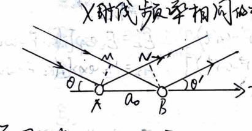
Point-to-point interference on a lattice plane.
$$ \delta = a_0\cos\theta $$
$$ \delta' = -a_0\cos\theta' $$
2) Plane-to-plane interference:
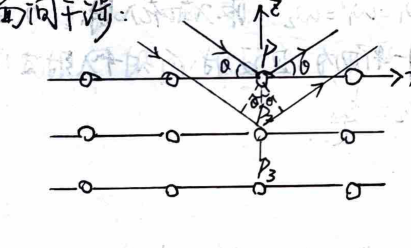
Bragg reflection between lattice planes.
Principal maxima: $ 2d\sin\theta = k\lambda $.
Within a crystal there are many families of crystal planes, with different plane spacings $d$. For a given incident direction, there are different diffraction angles, forming a series.
Bragg condition: $ 2d_1\sin\theta_1 = k_1\lambda, 2d_2\sin\theta_2 = k_2\lambda \dots $
The principal maxima formed by inter-planar interference for a certain crystal plane are equivalent to the 0th-order principal maxima reflected by each possible crystal plane.
Laue method: Continuous spectrum X-rays illuminating a single crystal — Given crystal orientation but undefined wavelength, can determine unit cell structure.
Debye-Scherrer method: Monochromatic X-rays illuminating polycrystalline powder — Given wavelength but undefined crystal orientation, can determine lattice constant.
A monochromatic plane electromagnetic wave in an infinite homogeneous isotropic medium:
$$ \vec{E} \perp \vec{H}, \quad \vec{E} \times \vec{H} // \vec{k}, \quad \sqrt{\varepsilon_0 \varepsilon} E = \sqrt{\mu_0 \mu} H, \quad k = \frac{n}{c}\omega $$
$$ n = \sqrt{\varepsilon \mu} \approx \sqrt{\varepsilon} \quad (\text{for optical frequencies, } \mu \simeq 1, n \approx \sqrt{\varepsilon}) $$
Boundary conditions:
$$ \begin{cases} D_{1n} = D_{2n} & E_{1t} = E_{2t} \\ B_{1n} = B_{2n} & H_{1t} = H_{2t} \end{cases} $$
where $n$ is normal direction, $t$ is tangential direction.
Incident wave:
$$ \tilde{\vec{E}}_1 = \vec{E}_1 \exp[i(\vec{k}_1 \cdot \vec{r} - \omega_1 t)] \quad \tilde{\vec{H}}_1 = \vec{H}_1 \exp[i(\vec{k}_1 \cdot \vec{r} - \omega_1 t)] $$
Reflected wave:
$$ \tilde{\vec{E}}'_1 = \vec{E}'_1 \exp[i(\vec{k}'_1 \cdot \vec{r} - \omega'_1 t)] \quad \tilde{\vec{H}}'_1 = \vec{H}'_1 \exp[i(\vec{k}'_1 \cdot \vec{r} - \omega'_1 t)] $$
Refracted wave:
$$ \tilde{\vec{E}}_2 = \vec{E}_2 \exp[i(\vec{k}_2 \cdot \vec{r} - \omega_2 t)] \quad \tilde{\vec{H}}_2 = \vec{H}_2 \exp[i(\vec{k}_2 \cdot \vec{r} - \omega_2 t)] $$
To satisfy the boundary conditions at any $x, y, t$, we must have:
$$ k_{1x} = k'_{1x} = k_{2x}, \quad k_{1y} = k'_{1y} = k_{2y}, \quad \omega_1 = \omega'_1 = \omega_2 $$
Taking the $x$-axis in the plane of incidence, then $k_{1y} = 0$. Therefore, $k'_{1y} = k_{2y} = 0$. The reflected, refracted, and incident rays are coplanar, and they have the same frequency.
$$ \because \sin i_1 = \frac{k_{1x}}{k_1}, \quad \sin i'_1 = \frac{k'_{1x}}{k'_1}, \quad \sin i_2 = \frac{k_{2x}}{k_2} $$
$$ \text{From } k = \frac{n}{c}\omega, \quad k_{1x} = k'_{1x} = k_{2x} $$
$$ \text{we have } k_1 = k'_1 = \frac{n_1\omega}{c}, \quad k_2 = \frac{n_2\omega}{c} $$
$$ \therefore \sin i_1 = \sin i'_1, \quad n_1 \sin i_1 = n_2 \sin i_2 \quad \text{: Law of reflection and refraction.} $$
And $ k_{2z} = \sqrt{k_2^2 - k_{2x}^2} = \sqrt{(\frac{n_2}{n_1})^2 k_1^2 - k_{1x}^2} = \sqrt{(\frac{n_2}{n_1})^2 k_1^2 - k_1^2 \sin^2 i_1} = k_1 \sqrt{(\frac{n_2}{n_1})^2 - \sin^2 i_1} $.
Let $\sin i_c = n_2/n_1$ (total internal reflection critical angle). Then $ k_{2z} = k_1 \sqrt{\sin^2 i_c - \sin^2 i_1} = \frac{2\pi}{\lambda_1} \sqrt{\sin^2 i_c - \sin^2 i_1} $.
Derivation of Fresnel Equations:
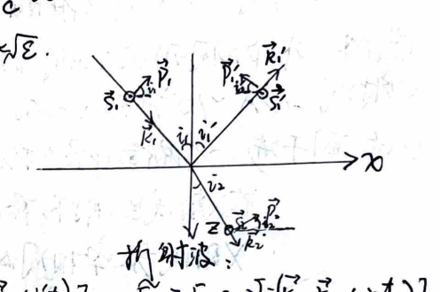
Coordinate system for reflection and refraction.
Boundary condition 1 (Tangential $\vec{E}$ continuous): $ -\varepsilon_1 \tilde{E}_{1p} \sin i_1 = -\varepsilon_1 (\tilde{E}'_{1p} \sin i_1 + \tilde{E}'_{1p} \sin i'_1) $
Boundary condition 2 (Normal $\vec{E}$ continuous): $ \tilde{E}_{1p} \cos i_1 = \tilde{E}'_{1p} \cos i_1 - \tilde{E}'_{1p} \cos i'_1 $
Boundary condition 3 (Tangential $\vec{H}$ continuous): $ -\mu_1 \tilde{H}_{1p} \sin i_1 = -\mu_1 (\tilde{H}_{1p} \sin i_1 + \tilde{H}'_{1p} \sin i'_1) $
Boundary condition 4 (Normal $\vec{H}$ continuous): $ \tilde{H}_{2p} \cos i_2 = \tilde{H}_{1p} \cos i_1 - \tilde{H}'_{1p} \cos i'_1 $
$s$: senkrecht (perpendicular), $p$: parallel (parallel).
Solving yields:
$$ \tilde{E}'_{1p} = \frac{\varepsilon_2 \sin i_2 \cos i_1 - \varepsilon_1 \sin i_1 \cos i_2}{\varepsilon_1 \sin i_1 \cos i_2 + \varepsilon_2 \sin i_2 \cos i_1} \tilde{E}_{1p} \quad \tilde{H}'_{1p} = \frac{\mu_2 \sin i_2 \cos i_1 - \mu_1 \sin i_1 \cos i_2}{\mu_1 \sin i_1 \cos i_2 + \mu_2 \sin i_2 \cos i_1} \tilde{H}_{1p} $$
$$ \tilde{E}_{2p} = \frac{\varepsilon_1(\sin i_1 \cos i'_1 + \sin i'_1 \cos i_1)}{\varepsilon_1 \sin i'_1 \cos i_2 + \varepsilon_2 \sin i_2 \cos i'_1} \tilde{E}_{1p} \quad \tilde{H}_{2p} = \frac{\mu_1 \sin i_1 \cos i'_1 + \mu_1 \sin i'_1 \cos i_1}{\mu_1 \sin i'_1 \cos i_2 + \mu_2 \sin i_2 \cos i'_1} \tilde{H}_{1p} $$
From $ \sqrt{\varepsilon_0 \varepsilon} \vec{E} = \sqrt{\mu_0 \mu} \vec{H} $, $ \vec{B} \perp \vec{H} $, we have
$$ \tilde{H}_{1p} = -\sqrt{\frac{\varepsilon_1 \varepsilon_0}{\mu_1 \mu_0}} \tilde{E}_{1s}, \quad \tilde{H}'_{1p} = -\sqrt{\frac{\varepsilon_1 \varepsilon_0}{\mu_1 \mu_0}} \tilde{E}'_{1s}, \quad \tilde{H}_{2p} = -\sqrt{\frac{\varepsilon_2 \varepsilon_0}{\mu_2 \mu_0}} \tilde{E}_{2s} $$
With $ \mu_1 \approx \mu_2 \approx 1 $, $ n_i \approx \sqrt{\varepsilon_i} $ and $ i'_1 = i_1 $, $ n_1\sin i_1 = n_2\sin i_2 $, we obtain:
$$ \tilde{E}'_{1p} = \frac{n_2 \cos i_1 - n_1 \cos i_2}{n_2 \cos i_1 + n_1 \cos i_2} \tilde{E}_{1p} = \frac{\tan(i_1 - i_2)}{\tan(i_1 + i_2)} \tilde{E}_{1p} $$
$$ \tilde{E}_{2p} = \frac{2n_1 \cos i_1}{n_2 \cos i_1 + n_1 \cos i_2} \tilde{E}_{1p} $$
$$ \tilde{E}'_{1s} = \frac{n_1 \cos i_1 - n_2 \cos i_2}{n_1 \cos i_1 + n_2 \cos i_2} \tilde{E}_{1s} = \frac{-\sin(i_1 - i_2)}{\sin(i_1 + i_2)} \tilde{E}_{1s} $$
$$ \tilde{E}_{2s} = \frac{2n_1 \cos i_1}{n_1 \cos i_1 + n_2 \cos i_2} \tilde{E}_{1s} = \frac{2\cos i_1 \sin i_2}{\sin(i_1 + i_2)} \tilde{E}_{1s} $$
Thus, the $p$-component of the reflected and refracted light only depends on the $p$-component of the incident light, and the $s$-component only depends on the $s$-component. The vibrations of the $p$ and $s$ components are independent of each other.
Amplitude Reflectivity: $ \tilde{r}_p = \tilde{E}'_{1p} / \tilde{E}_{1p} $, $ \tilde{r}_s = \tilde{E}'_{1s} / \tilde{E}_{1s} $
Intensity Reflectivity: $ R_p = \frac{I'_p}{I_{1p}} = \frac{W'_p}{W_{1p}} = |\tilde{r}_p|^2 $, $ R_s = \frac{I'_s}{I_{1s}} = \frac{W'_s}{W_{1s}} = |\tilde{r}_s|^2 $ (where $ I = \frac{n}{2\mu_0} |\vec{E}|^2 \propto n |\vec{E}|^2 $)
Amplitude Transmissivity: $ \tilde{t}_p = \tilde{E}_{2p} / \tilde{E}_{1p} $, $ \tilde{t}_s = \tilde{E}_{2s} / \tilde{E}_{1s} $
Intensity Transmissivity: $ T_p = \frac{I_{2p}}{I_{1p}} = \frac{n_2}{n_1} |\tilde{t}_p|^2 $, $ T_s = \frac{I_{2s}}{I_{1s}} = \frac{n_2}{n_1} |\tilde{t}_s|^2 $
Energy Flow Transmissivity: $ \Gamma_p = \frac{W_{2p}}{W_{1p}} = \frac{\cos i_2}{\cos i_1} T_p $, $ \Gamma_s = \frac{W_{2s}}{W_{1s}} = \frac{\cos i_2}{\cos i_1} T_s $ (where $ W = I/S $, $ S_1/S_2 = \cos i_1 / \cos i_2 $)
From energy conservation: $ W_{1p} + W_{2p} = W_{1p} \implies R_p + \Gamma_p = 1 \implies R_p + \frac{\cos i_2}{\cos i_1} T_p = 1 $
Similarly $ R_s + \Gamma_s = 1 \implies R_s + \frac{\cos i_2}{\cos i_1} T_s = 1 $
$$ \therefore |\tilde{r}_p|^2 + \frac{n_2 \cos i_2}{n_1 \cos i_1} |\tilde{t}_p|^2 = 1, \quad |\tilde{r}_s|^2 + \frac{n_2 \cos i_2}{n_1 \cos i_1} |\tilde{t}_s|^2 = 1 $$
Substituting Fresnel equations into amplitude reflectivity and transmissivity yields:
$$ \tilde{r}_p = \frac{\tan(i_1 - i_2)}{\tan(i_1 + i_2)}, \quad \tilde{r}_s = \frac{-\sin(i_1 - i_2)}{\sin(i_1 + i_2)} $$
$$ \tilde{t}_p = \frac{2n_1 \cos i_1}{n_2 \cos i_1 + n_1 \cos i_2}, \quad \tilde{t}_s = \frac{2n_1 \cos i_1}{n_1 \cos i_1 + n_2 \cos i_2} $$
This allows further calculation of light intensity and energy flow reflectivity and transmissivity.
Brewster's Angle:
Consider $\tilde{r}_p$ (amplitude $p$-component reflectivity). When $ i_1 + i_2 = \frac{\pi}{2} $, $\tilde{r}_p = 0$. The incident angle $i_1$ at this time is called the Brewster angle $i_B = i_1$. We have $ i_2 = \frac{\pi}{2} - i_B $, $ n_1 \sin i_1 = n_2 \sin i_2 \implies n_1 \sin i_B = n_2 \cos i_B $.
$$ \therefore i_B = \arctan\left(\frac{n_2}{n_1}\right) $$
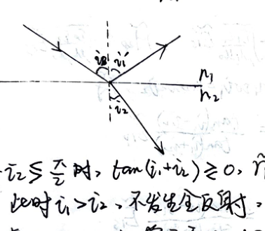
Brewster's angle condition.
When $ i_1 \le i_B $ (i.e., $ i_1 + i_2 \le \pi/2 $), $ \tan(i_1 + i_2) \ge 0 $, $ \tilde{r}_p \ge 0 $.
If $ n_1 < n_2 $, then $ i_1 > i_2 $, total reflection does not occur. $ \tan(i_1 - i_2) > 0 $, so $ \tilde{r}_p (i_1 \le i_B) > 0 $.
Therefore, as $i_1$ increases from $0$ to $i_B$, the phase difference $\delta_p = -\arg \tilde{r}_p$ changes from $0$ to $\pi$.
Phase difference $\delta_s = -\arg \tilde{r}_s$ is always $\pi$.
If $ n_1 > n_2 $, then $ i_1 < i_2 $. Total reflection occurs when $ i_1 > i_c = \arcsin(n_2/n_1) $.
Since $ i_c = \arcsin(n_2/n_1) > \arctan(n_2/n_1) = i_B $, total reflection has not yet occurred when $i_1$ increases to the Brewster angle. But $\delta_p$ suddenly changes to $0$, and $\delta_s$ is always $0$.
When $ i_1 > i_c $, $\tilde{r}_p$ and $\tilde{r}_s$ become complex numbers:
$$ \tilde{r}_p = \frac{\tan(i_1 - i_2)}{\tan(i_1 + i_2)}, \quad \tilde{r}_s = \frac{-\sin(i_1 - i_2)}{\sin(i_1 + i_2)} $$
The phase angles can be derived as $ \delta_p = 2\arctan\frac{n_1}{n_2} \frac{\sqrt{(n_1/n_2)^2 \sin^2 i_1 - 1}}{\cos i_1} $ and $ \delta_s = 2\arctan \frac{(n_1/n_2)\sqrt{\sin^2 i_1 - 1}}{\cos i_1} $.
It can be seen that when a beam of light reflects from an optically denser medium under normal incidence and glancing incidence, the direction of the light vector is reversed, meaning there is a half-wave loss. In other cases (including refraction), there is none.
Since the reflectivity and transmissivity of the $p$-component and $s$-component are generally different, and reflection may have a phase jump, reflection and refraction will change the polarization state of the incident light.
Specifically, when light is incident at the Brewster angle, $\tilde{r}_p = 0$. The reflected light only contains the $s$-component and is linearly polarized. Thus $i_B$ is also called the polarizing angle.
1. Natural light: Contains transverse vibrations in all directions in large quantities. The probability distribution of orientations is isotropic. The phase relationship between them is un-fixed.
The original orientation of a polarizer can be decomposed into $s, p$ components, only the $p$ (parallel) component passes. Intensity is $\frac{1}{2}I_0$.
2. Linearly polarized light: Single vibration direction. $ A_t = A_0 \cos\theta $, $ I_t = I_0 \cos^2\theta $.
Polarizers: use dichroism of crystals (polaroid films), optical anisotropy of crystals (crystal prism polarizers), reflection and refraction at interfaces (Brewster angle reflecting polarizers, pile of glass plates).
3. Partially polarized light: Vibrations in all directions exist, but amplitude is uneven.
Degree of polarization: $ P = \frac{I_{\text{max}} - I_{\text{min}}}{I_{\text{max}} + I_{\text{min}}} $. For natural light it is $0$, for linearly polarized light it is $1$.
4. Circularly polarized light: The instantaneous magnitude of the light vector in the wave surface is constant, and its direction rotates at angular velocity $\omega$.
$$ \vec{E} = E_x \hat{x} + E_y \hat{y} = A\cos\omega t \hat{x} + A\cos(\omega t \pm \pi/2) \hat{y} \quad (+:\text{Right-handed}, -:\text{Left-handed}) $$
$$ I_0 = A_x^2 + A_y^2 = 2A^2 $$
Regardless of the transmission direction of the polarizer, the transmitted intensity is $ I = A_x^2 = A^2 = \frac{1}{2}I_0 $.
5. Elliptically polarized light:
$$ \begin{cases} E_x = A\cos\omega t \\ E_y = A\cos(\omega t + \delta) \end{cases} \quad \delta \neq \pm\pi/2, 0 < |\delta| < \pi $$
$$ \therefore \vec{E} = E_x \hat{x} + E_y \hat{y} = A\cos\omega t \hat{x} + A\cos(\omega t + \delta) \hat{y} $$
$\delta > 0$ Right-handed, $\delta < 0$ Left-handed.
1. Birefringence:
Ordinary ray (o-ray) and Extraordinary ray (e-ray) have different propagation speeds and directions in an anisotropic crystal.
The o-ray and e-ray only have meaning inside the birefringent crystal; after exiting, both are linearly polarized rays.
Principal plane: The plane formed by the propagation direction of a ray (o/e) in the crystal and the optic axis.
When the plane of incidence and the principal plane coincide, o-ray and e-ray both propagate in this plane. Otherwise, the e-ray may not be in the plane of incidence.
Optic axis: A direction in the crystal where the o-ray and e-ray do not separate. Irrespective of crystal shape, the optic axis direction can be found by crushing.
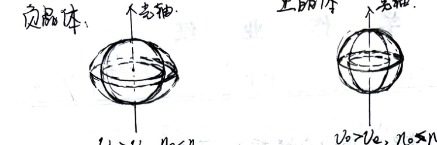
Wave surfaces in positive and negative crystals.
Negative crystal: $v_e > v_o, n_e < n_o$. Positive crystal: $v_o > v_e, n_o > n_e$.
The vibration direction of the o-ray is perpendicular to the principal plane. The vibration direction of the e-ray is in the principal plane.
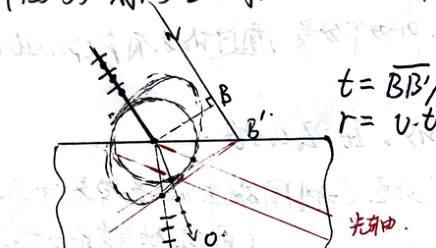
Huygens construction for birefringence.
Applications: Crystal Polarizers
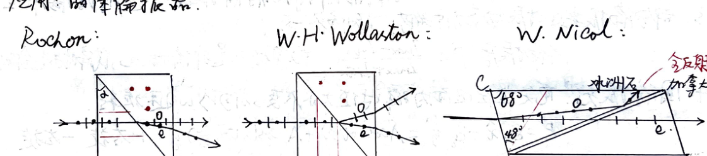
Rochon, Wollaston, and Nicol prisms.
Waveplates (Retardation Plates)
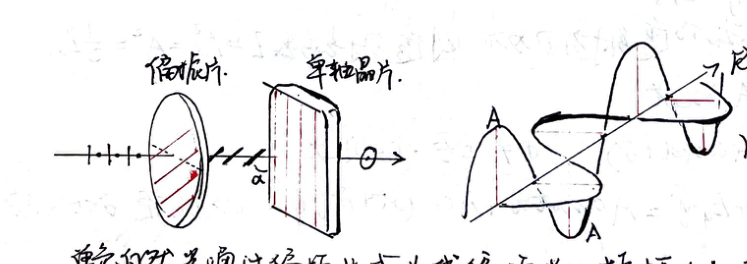
Action of a waveplate on linearly polarized light.
Monochromatic natural light passes through a polarizer to become linearly polarized light with amplitude $A$. The vibration direction makes an angle $\alpha$ with the optic axis.
Linearly polarized light undergoes birefringence in the crystal plate. o-ray vibration is perpendicular to the optic axis: $ A_o = A\sin\alpha $. e-ray vibration is parallel to the optic axis: $ A_e = A\cos\alpha $.
In this case, o-ray and e-ray propagate in the same direction, but their speeds $v_o, v_e$ are different. Thus, the phase difference after the two rays emerge is $ \Delta\varphi = \frac{2\pi}{\lambda}(n_o - n_e)d $.
If an analyzer ($P_2$) orthogonal to the front polarizer ($P_1$) is added after this setup:
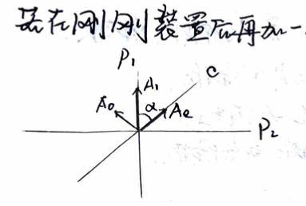
Crossed polarizers with a waveplate.
$$ A_o = A_1\sin\alpha, \quad A_e = A_1\cos\alpha $$
After $P_2$: $ A_{2o} = A_o\cos\alpha = A_1\sin\alpha\cos\alpha $, $ A_{2e} = A_e\sin\alpha = A_1\sin\alpha\cos\alpha $.
$$ \therefore \text{When } P_1 \perp P_2, A_{2e} = A_{2o} $$
The total phase difference between the two coherent polarized rays is $ \Delta\varphi = \frac{2\pi}{\lambda}(n_o - n_e)d + \pi $. Because $A_{2o}$ and $A_{2e}$ are in opposite directions, there is an additional phase difference of $\pi$.
When $ \Delta\varphi = 2k\pi $, $(n_o - n_e)d = (2k-1)\lambda/2$, interference is enhanced.
When $ \Delta\varphi = (2k+1)\pi $, $(n_o - n_e)d = k\lambda$, interference is weakened.
When $\alpha$ changes, there are interference fringes. If the crystal is wedge-shaped, $(n_o - n_e)$ has a certain distribution and produces interference fringes, used for measuring elasticity.
2. Optical Rotation:
The polarization plane rotates by an angle $ \varphi = \alpha d $. $\alpha$ is the specific rotation, $d$ is the thickness of the plate.
Fresnel's theory: Linearly polarized light is composed of two circularly polarized lights rotating in opposite directions with the same $\omega$. The two travel at different speeds in the crystal. After exiting, $ \varphi_R = \frac{\omega d}{v_R} $, $ \varphi_L = \frac{\omega d}{v_L} $, then $ \varphi = \frac{\varphi_R - \varphi_L}{2} = \frac{\omega d}{2} (\frac{1}{v_R} - \frac{1}{v_L}) = \frac{\pi}{\lambda} (n_L - n_R) d $.
Therefore $ \alpha = \frac{\varphi}{d} = \frac{\pi}{\lambda}(n_L - n_R) $.
Saccharimeter (Sugar polarimeter): $ \varphi = \alpha N L $. $L$: tube length, $N$: solution concentration.
Faraday effect (Magnetic rotation): Adding a magnetic field along the light propagation direction, $ \varphi = V \cdot L B $. $V$ is Verdet constant.
| Step 1 | Let incident light pass through polarizer $P$. Change the transmission axis of $P$. | ||
|---|---|---|---|
| Observation | Extinction | Intensity is unchanged | Intensity changes but no extinction |
| Conclusion | Linearly polarized | Natural light OR Circularly polarized | Partially polarized OR Elliptically polarized |
| Step 2 | Add a quarter-wave plate + Polarizer | Add a quarter-wave plate + Polarizer | |
| Observation | Extinction / No extinction | Extinction / No extinction | |
| Conclusion | Circularly pol. / Natural light | Elliptically pol. / Partially pol. | |